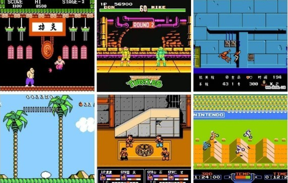
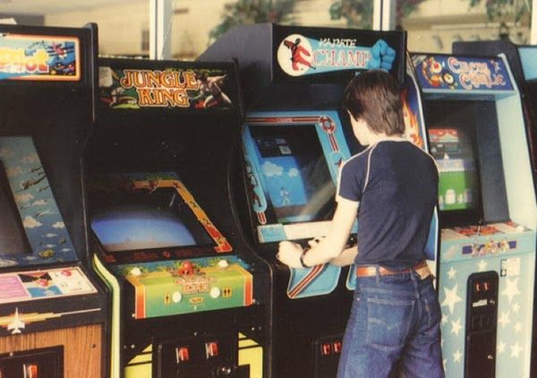
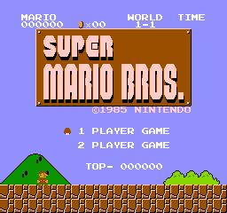

Bienvenidos a Capi Retro Games
Revive la magia de los videojuegos retro de los años 80 y 90. Aquí encontrarás los mejores juegos y consolas de la época dorada del gaming.
.:Juegos Retro:.
Los juegos antiguos son una parte querida de nuestro patrimonio cultural y brindan entretenimiento y nostalgia a personas de todas las edades. Estos juegos, que fueron populares en las décadas de 1970 y 1980, tienen un encanto y una sencillez únicos que los distinguen de los videojuegos modernos, se jugaban típicamente en salas de juegos, bares y otros lugares públicos, y los disfrutaban personas de todas las edades.
Los juegos antiguos son conocidos por su mecánica de juego simple, gráficos retro y efectos de sonido. A diferencia de los videojuegos modernos, que pueden tener historias complejas y requieren horas de juego para dominar, los juegos antiguos son fáciles de aprender y jugar.
.:Emuladores:.
¿Qué es un emulador?

Técnicamente, un emulador es un software, que permite ejecutar programas o videojuegos en una plataforma (sea una arquitectura de hardware o un sistema operativo) diferente de aquella para la cual fueron escritos originalmente: ya sea un pc windows, un android, consolas como psp, ps3, nintendo switch... etc; Por lo que podemos jugar a nuestras consolas retro favoritas ejecutando un programa que la emule, y los juegos físicos son substituidos por unos archivos de ordenador que se llaman ROMS.
En esta web pondremos a su alcance algunos de los emuladores de las consolas mas famosas y clásicas y también sus juegos mas populares, para que tenga a su disposición, aquel que quiera disfrutar y recordar los viejos tiempos, le regalamos un poco de nostalgia.!